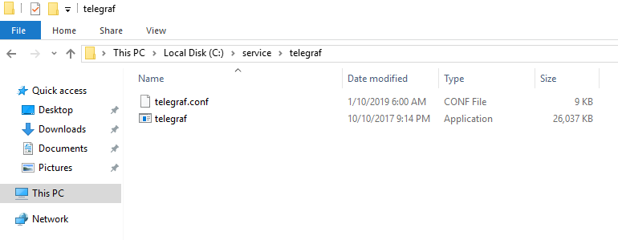
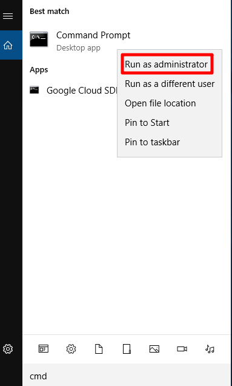
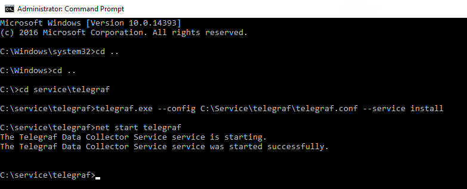
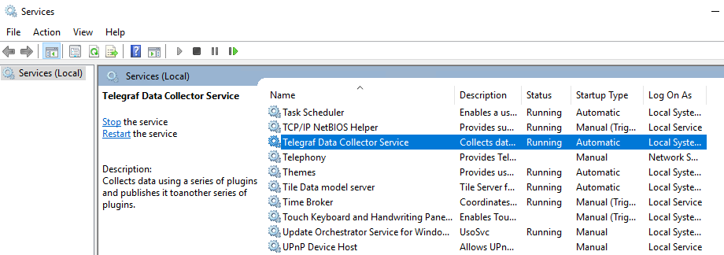
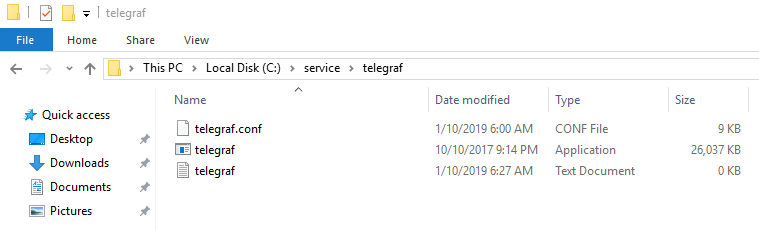

本文章將介紹 telegraf 建立 ( windows )
1. 下載 telegraf 壓縮檔
下載網址：https://github.com/influxdata/telegraf/releases
2. 將檔案解壓縮後會有 config 與 exe 檔，放到須監控的機器底下的 D:\Service\telegraf\（ 若沒有 D 槽，放在系統槽即可 )

3. 打開 telegraf.conf 做設定
telegraf 內容：https://snoopy30485.github.io/2018/08/03/telegraf-windows/
4. 以系統管理員身份開啟 Command Prompt ( cmd )，輸入指令到 telegraf 的路徑下，進行 telegraf 服務安裝並啟動

進入 telegraf 的路徑下
1 | D: |
安裝成服務
1 | telegraf.exe --config D:\Service\telegraf\telegraf.conf --service install |
啟動也可以到 services.msc 啟動
1 | net start telegraf |


服務安裝完成後，會在路徑底下多一個剛剛 config 設定的 telegraf.log 檔案
